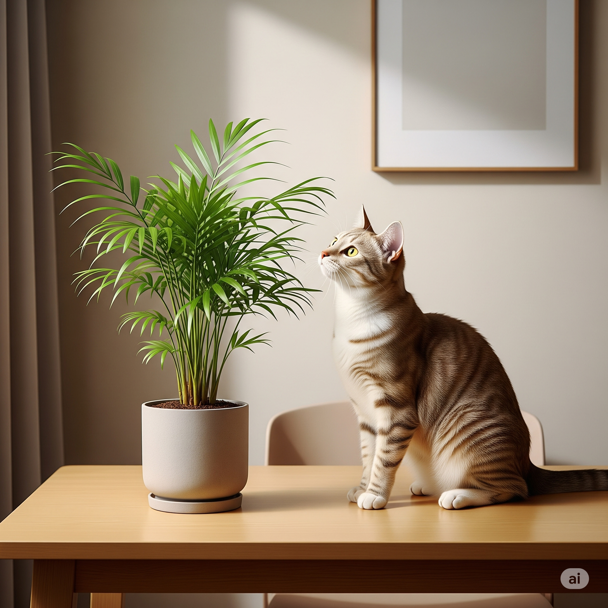

Primeiros cuidados com plantas em casas com gatos

Trazer plantas para dentro de casa pode transformar qualquer ambiente, mas quando há gatos no espaço, alguns cuidados são essenciais. A boa notícia? Com planejamento e informação, é totalmente possível unir um lar verde e pet-friendly.
1. Comece pela escolha segura das plantas
Antes de tudo, verifique se as plantas são seguras para gatos. Muitas espécies comuns em decoração são tóxicas para felinos e podem causar desde desconfortos digestivos até quadros graves de intoxicação. Prefira opções como marantas, calatheas, palmeira-ráfis e a famosa graminha para gatos.
2. Posicione bem as plantas
Gatos adoram escalar, pular e explorar. Evite deixar vasos em locais muito acessíveis caso a planta precise de proteção. Estantes altas, suportes suspensos ou prateleiras com bom recuo podem ajudar a manter a planta segura e a casa organizada.
3. Evite vasos que tombam facilmente
Gatos curiosos e vasos instáveis não combinam. Prefira vasos pesados ou de base larga, que resistam a eventuais encostões. Colocar pedras decorativas sobre a terra também pode impedir escavações indesejadas.
4. Crie ambientes com estímulo e redirecionamento
Gatos ativos precisam de estímulo. Se a planta é a única “novidade” no espaço, ela vira o alvo. Invista em arranhadores, brinquedos e cantinhos próprios para o felino. E, claro, ofereça graminha e catnip como alternativas naturais e seguras.
5. Cuidado com substâncias perigosas
Evite usar fertilizantes, pesticidas e adubos químicos ao alcance do gato. Mesmo produtos orgânicos devem ser aplicados com cuidado. Se necessário, mantenha a planta fora de alcance até a substância ser absorvida ou removida.
6. Observe o comportamento do seu gato
Cada gato reage de forma diferente às plantas. Alguns ignoram totalmente, outros investigam tudo. Nos primeiros dias, observe possíveis mordidas, escavações ou alergias. Ajuste a posição ou até troque a planta, se for o caso.
Com tempo, paciência e atenção, é possível ensinar o gato a conviver com as plantas e vice-versa.
Um lar com plantas e gatos pode ser harmônico, bonito e seguro — basta começar com o pé (e a patinha) direitos!
← Voltar para o blog